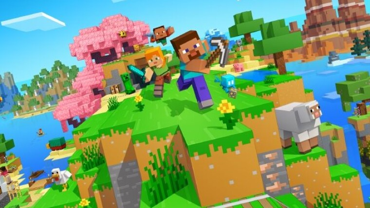

The Story of Minecraft
Today, Minecraft is one of the most recognizable video games in the world. It has been played by hundreds of millions of people, translated into dozens of languages, used in schools, and featured in countless videos across the internet. For many players, Minecraft was more than just a game—it became a place to create, experiment, learn, and share ideas.
What makes Minecraft remarkable is that it did not begin as a massive corporate project backed by a large studio. Instead, it started as a small independent game created by a single programmer with a simple but powerful idea: give players a world made of blocks and let them decide what to do with it.
That idea changed gaming forever. From simple houses and underground shelters to giant cities, functioning computers, and recreations of famous landmarks, Minecraft gave players something few games had ever offered before—almost unlimited creative freedom.
How Minecraft Started
The story of Minecraft begins in 2009 with Swedish programmer Markus Persson, better known online as Notch. At the time, he was experimenting with game development ideas and was inspired by several existing games, particularly sandbox-style titles that allowed players to modify the world around them.
One of the biggest influences was a game called Infiniminer. Although simple, it introduced the concept of exploring and altering a world built from blocks. Notch saw potential in this idea and decided to expand it into something much larger.
The first public versions of Minecraft were extremely basic. Players could place blocks, remove blocks, and explore randomly generated environments. There were no quests, no storylines, and very few rules.
Surprisingly, this simplicity became one of the game's greatest strengths. Instead of telling players what to do, Minecraft allowed them to decide for themselves.
The Birth of a Sandbox Phenomenon
Most video games are built around objectives. Players complete missions, follow stories, defeat enemies, and progress toward a specific ending. Minecraft took a completely different approach.
Rather than providing a fixed path, the game offered a world full of possibilities. Players could build homes, explore caves, climb mountains, create farms, search for rare materials, or simply wander through the landscape.
Every player's experience became unique. Some focused on architecture and design, while others preferred exploration, survival, engineering, or multiplayer adventures.
This freedom encouraged creativity on a scale rarely seen in gaming before.
The Evolution of Minecraft
As Minecraft gained popularity, development accelerated. New updates introduced crafting systems, tools, resources, animals, weather, and increasingly complex gameplay mechanics.
Players could now gather materials such as wood, stone, iron, gold, and diamonds. These resources allowed them to craft equipment, construct buildings, and survive in dangerous environments.
The addition of Survival Mode transformed Minecraft from a simple building sandbox into a game that combined creativity with challenge.
Players now had to manage resources, defend themselves from hostile creatures, and prepare for the dangers that emerged after sunset.

The Rise of Mojang
As more people discovered Minecraft, it became clear that the project had outgrown a single developer. To support the game's rapid growth, Notch founded a company called Mojang.
What began as a personal experiment quickly evolved into a professional development studio dedicated to expanding Minecraft and supporting its growing community.
Mojang continued releasing updates that introduced new creatures, biomes, dimensions, gameplay systems, and quality-of-life improvements.
Each update encouraged players to return and discover new possibilities within the game's ever-expanding world.
Why Minecraft Became So Popular
Minecraft's success was not caused by a single feature. Instead, several factors combined to make it one of the most successful games ever created.
Its simple visual style allowed it to run on a wide variety of computers. The open-ended gameplay appealed to players of different ages and interests. Most importantly, the game encouraged creativity rather than restricting it.
The rise of YouTube also played a huge role in Minecraft's growth. Content creators shared tutorials, survival series, challenges, adventures, and massive building projects with millions of viewers.
Watching other people play Minecraft often inspired viewers to purchase the game and create worlds of their own.
Mods, Servers, and Community Creations
Another reason for Minecraft's extraordinary success was its community. Players began creating modifications, commonly known as mods, which added new features, creatures, mechanics, and entirely new gameplay experiences.
Multiplayer servers expanded the possibilities even further. Some servers introduced economies, role-playing, competitive games, and custom adventures that felt like entirely different games.
The community also built enormous projects, including working calculators, detailed cities, famous landmarks, and even functional computers created entirely within Minecraft.
These creations demonstrated the incredible flexibility of the game's block-based design.
From Indie Project to Global Success
By the early 2010s, Minecraft had become a worldwide phenomenon. Schools used it to teach creativity, engineering concepts, teamwork, and problem-solving skills.
Businesses studied its community-driven growth, while developers looked to Minecraft as proof that innovative ideas could compete with massive budgets.
In 2014, Microsoft purchased Mojang and Minecraft for approximately $2.5 billion. The acquisition highlighted how valuable the game had become after starting as a small independent project.
Despite the change in ownership, Minecraft continued to receive updates and remained one of the world's most popular games.
Minecraft's Place in Gaming History
Today, Minecraft is widely considered one of the most influential video games ever created. It helped popularize sandbox gameplay, inspired countless developers, and showed that player creativity could become the centerpiece of a game.
More importantly, Minecraft demonstrated that success does not always require cutting-edge graphics or enormous development teams. Sometimes a simple idea executed well can have a far greater impact.
The game's influence can be seen across modern gaming, education, online content creation, and even digital art communities.
Few games have left such a lasting mark on popular culture.